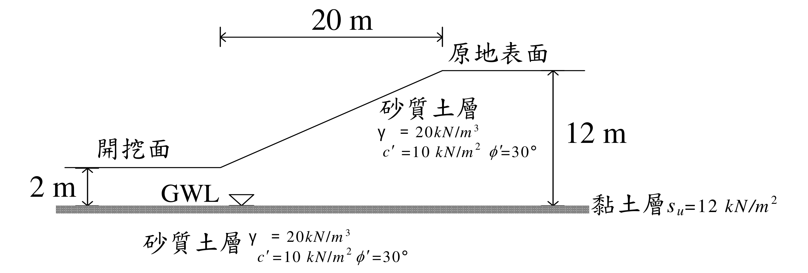
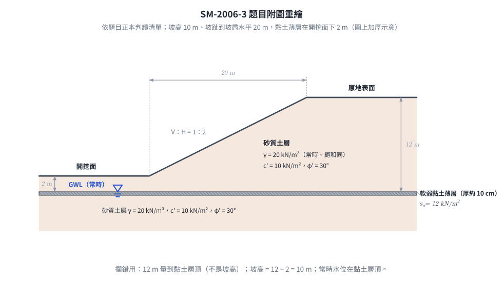
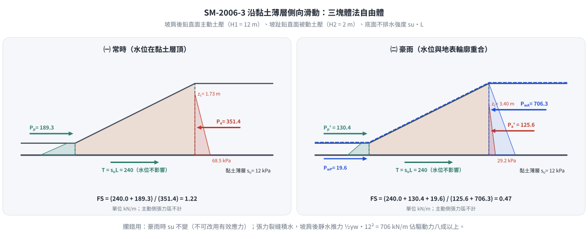

📄 題目正本：考卷原文・附圖・判讀清單（已確認）
SM-2006-3 題目正本
本檔只記錄考卷上寫了什麼、圖上畫了什麼，不含任何解法。解析見同資料夾
SM-2006-3.md。
判讀清單已確認（凍結）；本檔原則上不再修改（改動須回考卷原圖並記 log）。
| 項目 | 內容 |
|---|---|
| 考卷 | raw/exams/SM-2006_土壤力學與基礎設計.pdf 第 1 頁（全一頁），第三題 |
| 考年 | 民國 95 年（2006） |
| 配分 | 25 分（㈠15 分、㈡10 分） |
| 附圖 | SM-2006-3-fig-2.png（島式開挖邊坡剖面；2026-11-15 由考卷重新擷取 500 dpi）；既有 SM-2006-3-fig-1.png 為同一圖，左上空白處有滑鼠游標（I 形），保留不刪 |
| 判讀狀態 | 已確認（2026-11-15 關卡一：使用者授權依建議判讀確認；#1 依建議採一個情況；轉錄 2026-11-15；PyMuPDF 110 dpi 全頁目視，附圖 500 dpi 局部放大（向量圖，以 PDF 線段座標核對尺寸線端點）；盲讀後才比對既有解析） |
1. 考卷原文（逐字）
三、有一地下室工程擬採島式開挖施工，其邊坡採 V：H=1：2 之邊坡開挖如下圖所示，邊坡主要為砂質土層，其單位體積總重在常時與飽和狀態時均為 $\gamma$＝20 kN/m³，且 $c'$=10 kN/m²，$\phi'$=30°。今假設開挖面下夾有一薄層軟弱黏土（如圖中之斜線區所示），厚度約 10 cm，其不排水剪力強度為 $s_u$=12 kN/m²：
㈠假設常時地下水位位於軟弱黏土層表面，當邊坡開挖深度達 10m 時（即下圖所示情況），試以合理方法估計其產生側向滑動之安全係數。（15 分）
㈡若遇豪雨使地下水位分別上升至沿原地表面、沿邊坡面以及沿開挖面分布時，其產生側向滑動之安全係數變為如何？（10 分）
2. 考卷給的公式、附表與參數
- 邊坡：V：H = 1：2；開挖深度 10 m。
- 砂質土層（黏土層上、下皆同）：$\gamma$ = 20 kN/m³（常時與飽和皆同）、$c'$ = 10 kN/m²、$\phi'$ = 30°。
- 軟弱黏土薄層：厚約 10 cm、$s_u$ = 12 kN/m²。
- ㈠常時地下水位：軟弱黏土層表面。
- 沒有給：公式、$\gamma_w$、滑動面（滑動塊體）的形狀與位置、是否考慮張力裂縫、主／被動土壓力採用何種理論、黏土層在圖外的延伸範圍。
- 卷首注意事項：㈠可以使用電子計算器。㈡不必抄題，作答時請將試題題號及答案依照順序寫在試卷上，於本試題上作答者，不予計分。
3. 附圖

圖面文字照錄：20 m、原地表面、砂質土層、γ = 20kN/m³、c′ =10 kN/m² φ′=30°、12 m、開挖面、2 m、GWL、黏土層 su=12 kN/m²、砂質土層 γ = 20kN/m³ c′=10 kN/m² φ′=30°。
4. 判讀清單
| # | 項目 | 判讀 | 圖上／題文依據 | 把握 |
|---|---|---|---|---|
| 1 | ㈡三種水位的意思 | 建議讀法：一個情況——豪雨後地下水位與地表輪廓重合（坡肩後沿原地表面、坡面上沿邊坡面、坡趾前沿開挖面），即整個地表都在水位上。另一讀法：「分別」指三個情況（水位水平位於原地表面高程／沿坡面／水平位於開挖面高程）各算一個安全係數 | 題文「分別上升至沿原地表面、沿邊坡面以及沿開挖面分布時，其…安全係數變為如何」只問一個安全係數 | 不確定（影響答案，請確認）；依建議確認：採一個情況（水位與地表輪廓重合） |
| 2 | 坡面水平投影 | 20 m，由坡趾量到坡肩（尺寸線兩端 x = 261.7、374.5 pt，分別對齊坡趾 (261.8, 778.5) 與坡肩 (374.5, 729.2) 兩個轉折點） | PDF 線段座標 | 確定 |
| 3 | 原地表面到黏土層 | 12 m，上端對齊原地表面（729.2 pt），下端對齊黏土斜線帶上緣（797.9 pt） | PDF 線段座標 | 確定 |
| 4 | 開挖面到黏土層 | 2 m，上端對齊開挖面（778.8 pt），下端對齊黏土斜線帶上緣（797.9 pt） | PDF 線段座標 | 確定 |
| 5 | 坡高 | 12 − 2 = 10 m，與題文「開挖深度達 10m」及 1：2、水平 20 m 三者一致 | #2–#4＋題文 | 確定 |
| 6 | 圖面比例 | 不按比例（12 m 與 2 m 的圖面長度比、坡面畫成約 1：2.3），一律以標註數值為準 | PDF 座標 | 確定 |
| 7 | 黏土薄層 | 厚約 10 cm、水平，位於開挖面下 2 m；斜線帶由開挖面左端外側延伸到坡肩右側 12 m 尺寸線之外，判讀為水平連續、貫穿整個邊坡下方 | 附圖斜線帶＋題文 | 確定（解讀） |
| 8 | ㈠常時水位 | 在黏土層表面（GWL 符號尖端在 797.8 pt，與斜線帶上緣同高）；黏土層以上砂土無水壓 | 題文＋附圖 | 確定 |
| 9 | 砂土參數 | 黏土層上、下的砂質土層相同：$\gamma$ = 20（常時、飽和相同）、$c'$ = 10、$\phi'$ = 30° | 題文＋附圖兩處標註 | 確定 |
| 10 | 地表 | 坡肩右側原地表面水平、坡趾左側開挖面水平（向圖外延伸） | 附圖 | 確定 |
| 11 | 黏土強度 | 只給不排水剪力強度 $s_u$ = 12 kN/m²（$\phi$ = 0 的總應力強度） | 題文、附圖 | 確定 |
| 12 | 所求 | ㈠常時水位下「側向滑動」安全係數，方法自選（「合理方法」）；㈡豪雨水位上升後的安全係數 | 題文 | 確定 |
| 13 | 考卷沒有給 | 滑動塊體邊界（後緣位置、是否有張力裂縫）、土壓力理論、$\gamma_w$、黏土層在圖外的長度 | 全題 | 確定 |
轉錄：2026-11-15（SM-U3-3 題目正本推廣・批 1）
確認：2026-11-15 使用者授權依建議判讀確認（SM-U3-3 題目正本推廣・批 1，關卡一；使用者指示「要確認的依你建議」）
考題編號：SM-2006-3
主分類： SM-U3-3 坡地工程
副分類： SM-U3-1 側向土壓力理論、SM-U2-3 開挖之穩定性分析
分析法： 混合
標籤： 側向滑動 Rankine主動土壓力 Rankine被動土壓力 張力裂縫 孔隙水壓 不排水剪力強度 安全係數
1. 題目（考卷原文見題目正本）
考卷原文、公式／附表、附圖與判讀清單（已確認）見
SM-2006-3-problem.md。本節只列解題時最容易讀錯的地方與本解使用的記號；題意以題目正本為準。

重繪自考卷附圖，依題目正本判讀清單 #2–#11；攔下的判讀錯誤：12 m 是原地表面到黏土層頂（坡高 = 12 − 2 = 10 m），常時水位在黏土層頂。
常見誤讀
| 項目 | 正確判讀 | 常見誤讀 |
|---|---|---|
| 坡高 | 原地表面到黏土層頂 12 m、開挖面到黏土層頂 2 m → 坡高 10 m，水平投影 20 m（題目正本 #2–#5） | 把 12 m 當坡高，或把 20 m 當坡面斜長 |
| ㈡的水位 | 一個情況：豪雨後水位與地表輪廓重合（原地表面、邊坡面、開挖面）（#1，已確認） | 拆成三個水平水位各算一個安全係數 |
| 黏土強度 | 只給 $s_u$ = 12 kN/m²，為 $\phi=0$ 的不排水強度（#11） | 改用有效應力 $c'$、$\phi'$ 計算黏土層抗剪 |
| 考卷沒有給 | 滑動塊體後緣位置、張力裂縫、土壓理論都要自行假設並說明（#13） | 把本解採用的張力裂縫、主被動土壓當成題目條件 |
本解記號： $H_1$ 主動側（坡肩後）土柱高；$H_2$ 被動側（開挖面下）土柱高；$K_A$、$K_P$ Rankine 主／被動土壓力係數；$z_c$ 張力裂縫深度；$s_u$ 黏土不排水剪力強度。
2. 考題核心精神與出題者意圖 (Core Concepts & Examiner's Intent)
- 側向滑動分析（Sliding Block Method）： 考驗考生是否能將邊坡沿水平弱面滑動的問題，轉化為「主動土壓力（驅動力）」、「被動土壓力（抵抗力）」與「底部抗剪力（抵抗力）」的剛體平衡模型。
- 水壓效應與有效應力原理： 第 (二) 小題加入了豪雨條件，測驗考生是否知道土壓力必須用「有效應力」計算，再加上「孔隙水壓力」成為總側向推力。同時需注意張力裂縫在豪雨時應視為積水。
- 總應力與有效應力參數的混用陷阱： 題目巧妙地給了砂土的有效應力參數（$c', \phi'$）和黏土的總應力參數（不排水剪力強度 $s_u$）。考生必須清楚知道：水位的上升會改變砂土的有效應力與土壓力，但「不會」改變黏土的不排水剪力強度 $s_u$。
3. 解題戰略地圖與陷阱分析 (Strategic Roadmap & Trap Analysis)
-
Step 1: 定義滑動區塊
滑動區塊的右邊界設於坡頂（承受主動土壓力，高度 $H_1 = 12\text{m}$），左邊界設於坡趾（承受被動土壓力，高度 $H_2 = 2\text{m}$），底面為軟弱黏土層（長度 $L = 20\text{m}$）。 -
Step 2: 土壓力係數計算
利用 Rankine 理論求得砂土的 $K_A$ 與 $K_P$。 -
Step 3: 常時狀況分析 (Part 1)
水位在黏土層表面，故整個滑動區塊皆無孔隙水壓（$u=0$）。直接以 $\gamma = 20 \text{ kN/m}^3$ 計算 $P_A$ 與 $P_P$，底部抗滑力為 $T = s_u \times L$，計算安全係數。 -
Step 4: 豪雨狀況分析 (Part 2)
水位上升至地表。使用浮水漾位重 $\gamma'$ 計算有效土壓力 $P_A'$ 與 $P_P'$。外加兩側的靜水壓力 $P_{wA}$ 與 $P_{wP}$。底部抗滑力 $T$ 維持不變。
⚠️ 關鍵陷阱：
- 張力裂縫（Tension Crack）： 具凝聚力的土壤在主動側會產生張力裂縫，計算推力時須扣除裂縫深度的負側壓。豪雨時裂縫必定積滿水，產生額外水壓。
- 黏土層強度的誤判： 豪雨使水壓增加，若考生誤將黏土以有效應力法分析（扣除水壓），將會嚴重低估底部抗滑力。必須堅持使用給定的 $s_u = 12 \text{ kN/m}^2$。
3.5 變數層次分析 (Variable Hierarchy Analysis)
最終目標
分別求出常時與豪雨時，邊坡沿軟弱黏土層發生側向滑動之安全係數 FS
本題關鍵公式（依計算順序）
-
Rankine 土壓力係數：
$$ K_A = \tan^2(45^\circ - \phi'/2) \quad ; \quad K_P = \tan^2(45^\circ + \phi'/2) $$ -
張力裂縫深度：
$$ z_c = \frac{2c'}{\gamma \sqrt{K_A}} $$ -
主動驅動力與被動抵抗力：
$$ P_A = \int_{z_c}^{H_1} (K_A \sigma_v' - 2c'\sqrt{K_A}) dz + P_{wA} $$
$$ P_P = \int_{0}^{H_2} (K_P \sigma_v' + 2c'\sqrt{K_P}) dz + P_{wP} $$ -
底部抗滑力：
$$ T = s_u \times L $$ -
側向滑動安全係數：
$$ FS = \frac{T + \boxed{P_P}}{\boxed{P_A}} $$
L1：題目直接給定
| 符號 | 數值 | 說明 |
|---|---|---|
| $H_1$ | 12 m | 右側主動區界線高度 |
| $H_2$ | 2 m | 左側被動區界線高度 |
| $L$ | 20 m | 滑動區塊底部長度 |
| $\gamma$ | 20 kN/m³ | 砂土單位體積總重 |
| $c'$ | 10 kN/m² | 砂土有效凝聚力 |
| $\phi'$ | 30° | 砂土有效內摩擦角 |
| $s_u$ | 12 kN/m² | 軟弱黏土不排水剪力強度 |
L2：需知識點推導
基礎土壓力參數
| 符號 | 公式／來源 | 卡關? |
|---|---|---|
| $K_A$ | $\tan^2(45^\circ - \phi'/2)$ | |
| $K_P$ | $\tan^2(45^\circ + \phi'/2)$ | |
| $\gamma'$ | $\gamma_{sat} - \gamma_w$ | |
常時分析 (Part 1)
| 符號 | 公式／來源 | 卡關? |
|---|---|---|
| $P_A$ | $\frac{1}{2}\sigma_{a}'(H_1) \cdot (H_1 - z_c)$ | |
| $P_P$ | $\frac{1}{2}(\sigma_{p}'(0) + \sigma_{p}'(H_2)) \cdot H_2$ | |
| $T$ | $s_u \cdot L$ | |
豪雨分析 (Part 2)
| 符號 | 公式／來源 | 卡關? |
|---|---|---|
| $P_{A,total}$ | $P_A' + P_{wA}$ | |
| $P_{P,total}$ | $P_P' + P_{wP}$ | |
L3：深層知識（不懂就卡住）
| 知識點 | 說明 | 卡關? |
|---|---|---|
| 張力裂縫不計負壓 | 由於土壤無法承受拉力，主動土壓力為負值的區域（$0 \sim z_c$）不提供抵抗力，積分時應予捨棄。 | |
| 張力裂縫積水 | 遇豪雨時，主動側張力裂縫內會充滿水，須計入全深度（$H_1$）之靜水壓力。 | |
| 不排水強度與水壓解耦 | 軟弱黏土為不排水剪力強度 $s_u$，屬總應力參數。水位的升降不會改變 $s_u$ 大小，故底部抗滑力不變。 |
4. 步驟化詳細計算過程 (Step-by-Step Detailed Calculation)
Step 1: 土壓力係數計算
砂土之強度參數為 $c' = 10 \text{ kN/m}^2, \phi' = 30^\circ$：
- 主動土壓力係數 $K_A = \tan^2(45^\circ - 30^\circ/2) = \tan^2(30^\circ) = \frac{1}{3} \approx 0.333$
- 被動土壓力係數 $K_P = \tan^2(45^\circ + 30^\circ/2) = \tan^2(60^\circ) = 3.0$
- $K_A$ 與 $K_P$ 的開根號值分別為 $\sqrt{K_A} = \frac{1}{\sqrt{3}} \approx 0.577$ 與 $\sqrt{K_P} = \sqrt{3} \approx 1.732$
Step 2: 情況(一) 常時之側向滑動安全係數
此時地下水位在 $z = 12\text{m}$ 處（黏土層表面），故滑動區塊範圍內無孔隙水壓力（$u=0$），直接以總重 $\gamma = 20 \text{ kN/m}^3$ 計算。
(1) 右側主動驅動力 $P_A$ (高度 $H_1 = 12\text{m}$):
有效應力 $\sigma_v' = 20z$。
主動側向土壓力 $\sigma_a = K_A \sigma_v' - 2c'\sqrt{K_A} = \frac{1}{3}(20)z - 2(10)(\frac{1}{\sqrt{3}}) = 6.667z - 11.547$
計算張力裂縫深度 $z_c$（即 $\sigma_a = 0$ 處）：
$$ z_c = \frac{11.547}{6.667} = 1.732 \text{ m} $$
計算底部 ($z = 12\text{m}$) 之主動土壓力：
$$ \sigma_a(12) = 6.667(12) - 11.547 = 80 - 11.547 = 68.453 \text{ kN/m}^2 $$
主動推力 $P_A$（三角形面積，忽略負壓區）：
$$ P_A = \frac{1}{2} \times 68.453 \times (12 - 1.732) = 351.44 \text{ kN/m} $$
(2) 左側被動抵抗力 $P_P$ (高度 $H_2 = 2\text{m}$):
有效應力 $\sigma_v' = 20z$。
被動側向土壓力 $\sigma_p = K_P \sigma_v' + 2c'\sqrt{K_P} = 3(20)z + 2(10)(\sqrt{3}) = 60z + 34.641$
頂部 ($z = 0\text{m}$)： $\sigma_p(0) = 34.641 \text{ kN/m}^2$
底部 ($z = 2\text{m}$)： $\sigma_p(2) = 60(2) + 34.641 = 154.641 \text{ kN/m}^2$
被動抵抗力 $P_P$（梯形面積）：
$$ P_P = \frac{1}{2} \times (34.641 + 154.641) \times 2 = 189.28 \text{ kN/m} $$
(3) 底部抗滑力 $T$ (長度 $L = 20\text{m}$):
$$ T = s_u \times L = 12 \times 20 = 240.0 \text{ kN/m} $$
(4) 常時安全係數 $FS_1$:
$$ FS_1 = \frac{T + P_P}{P_A} = \frac{240.0 + 189.28}{351.44} = \frac{429.28}{351.44} = \boxed{1.22} $$
Step 3: 情況(二) 遇豪雨地下水位沿地表分布之安全係數
假設水的單位重 $\gamma_w = 9.81 \text{ kN/m}^3$。
砂土之浮水漾位重 $\gamma' = 20 - 9.81 = 10.19 \text{ kN/m}^3$。
豪雨時張力裂縫積滿水。
(1) 右側主動驅動力 $P_{A,total}$:
有效應力 $\sigma_v' = 10.19z$。
有效主動土壓力 $\sigma_a' = \frac{1}{3}(10.19)z - 11.547 = 3.397z - 11.547$
新的張力裂縫深度 $z_c'$：
$$ z_c' = \frac{11.547}{3.397} = 3.40 \text{ m} $$
底部 ($z = 12\text{m}$) 之有效主動土壓力：
$$ \sigma_a'(12) = 3.397(12) - 11.547 = 40.764 - 11.547 = 29.217 \text{ kN/m}^2 $$
有效主動推力 $P_A'$：
$$ P_A' = \frac{1}{2} \times 29.217 \times (12 - 3.40) = 125.63 \text{ kN/m} $$
右側孔隙水壓力 $P_{wA}$（靜水壓分佈）：
$$ P_{wA} = \frac{1}{2} \gamma_w H_1^2 = \frac{1}{2} \times 9.81 \times (12)^2 = 706.32 \text{ kN/m} $$
總主動驅動力：
$$ P_{A,total} = \boxed{P_A'} + P_{wA} = 125.63 + 706.32 = 831.95 \text{ kN/m} $$
(2) 左側被動抵抗力 $P_{P,total}$:
有效應力 $\sigma_v' = 10.19z$。
有效被動土壓力 $\sigma_p' = 3(10.19)z + 34.641 = 30.57z + 34.641$
頂部 ($z = 0\text{m}$)： $\sigma_p'(0) = 34.641 \text{ kN/m}^2$
底部 ($z = 2\text{m}$)： $\sigma_p'(2) = 30.57(2) + 34.641 = 61.14 + 34.641 = 95.781 \text{ kN/m}^2$
有效被動抵抗力 $P_P'$：
$$ P_P' = \frac{1}{2} \times (34.641 + 95.781) \times 2 = 130.42 \text{ kN/m} $$
左側孔隙水壓力 $P_{wP}$（靜水壓分佈）：
$$ P_{wP} = \frac{1}{2} \gamma_w H_2^2 = \frac{1}{2} \times 9.81 \times (2)^2 = 19.62 \text{ kN/m} $$
總被動抵抗力：
$$ P_{P,total} = \boxed{P_P'} + P_{wP} = 130.42 + 19.62 = 150.04 \text{ kN/m} $$
(3) 底部抗滑力 $T$:
策略註解：豪雨為短期事件，薄層軟弱黏土維持不排水狀態。其不排水剪力強度 $s_u$ 不受有效應力（或水壓）改變之影響。
$$ T = s_u \times L = 12 \times 20 = 240.0 \text{ kN/m} $$
(4) 豪雨時安全係數 $FS_2$:
$$ FS_2 = \frac{T + P_{P,total}}{P_{A,total}} = \frac{240.0 + 150.04}{831.95} = \frac{390.04}{831.95} = \boxed{0.47} $$
(註：若採用 $\gamma_w = 10 \text{ kN/m}^3$ 計算，FS 將約為 0.46，結論相同)

圖 2 三塊體法自由體，常時與豪雨並列。豪雨時 $s_u L$ 不變，驅動力八成以上來自坡肩後 12 m 的靜水推力；攔下「豪雨時把黏土改用有效應力」與「漏算張力裂縫積水」兩種錯誤。
5. 關鍵爭議點與進階探討 (Critical Issues & Advanced Discussion)
-
黏土層強度的選用邏輯：
許多考生在處理第(二)小題時，會直覺地想要扣除水壓力來計算底部的「有效正向力」，再乘上 $\tan\phi$。然而，題目明確給定的是「不排水剪力強度 $s_u = 12 \text{ kN/m}^2$」。在總應力分析（短期穩定）的框架下，$s_u$ 是一個獨立於正向總應力的定值（相當於 $\phi_u = 0$）。因此，儘管豪雨造成水壓大增，底部的抗剪力依然維持 $240 \text{ kN/m}$。 -
張力裂縫積水的威力：
由計算可知，當豪雨發生時，右側 12m 高的張力裂縫與孔隙中充滿水，產生的純水壓力推力高達 $706.32 \text{ kN/m}$，佔了總驅動力 $831.95 \text{ kN/m}$ 的 85% 以上。這反映了實務上邊坡破壞常發生在大雨期間的核心原因：龐大的靜水壓力不僅降低有效應力，更提供了極大的側向驅動力。 -
滲流力與靜水壓假定的等價性：
題目敘述「地下水位沿地表分布」，嚴格來說在坡面處會有平行的滲流網。但對於此種剛體滑動區塊模型，由於坡面的水壓為零，對區塊產生水平作用力的僅有左右兩側的垂直截面。而這兩個截面皆位於水平地表下，採用靜水壓力分佈（$u = \gamma_w z$）是最合理且符合極限平衡法假設的做法。
修正日期：2026-11-15（§1 改為指向題目正本 SM-2006-3-problem.md，重繪附圖 figs/SM-2006-3-fig-1-problem.svg；§4 Step 3 補解題圖解 figs/SM-2006-3-fig-2-blocks.svg；非勘誤）